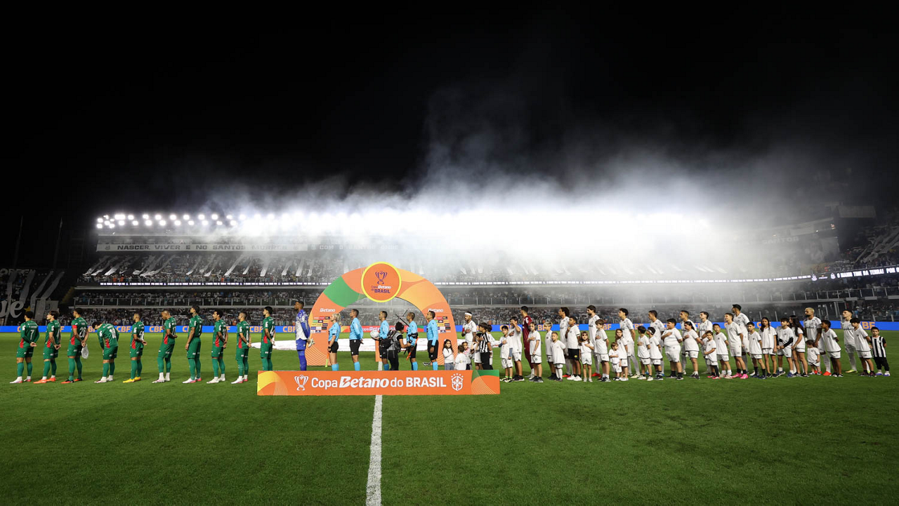

O Palmeiras está entre os quatro melhores da Copa do Brasil 2026. Depois de construir uma vantagem expressiva no primeiro confronto, o time comandado por Abel Ferreira empatou sem gols com o Santos na noite desta quarta-feria, 2 de setembro, na Vila Belmiro, e confirmou a classificação para a semifinal da competição.
O placar agregado terminou em 3 a 0 para o Verdão, resultado da vitória palmeirense no jogo de ida. Com a classificação, o Palmeiras chegou à semifinal da Copa do Brasil pela 10ª vez em sua história.
O avanço aumenta ainda mais a ligação do clube com um torneio no qual já levantou quatro taças, enquanto a evolução do torneio desde sua criação aparece na história da Copa do Brasil.
Classificação aconteceu no jogo de ida
O cenário da partida na Vila Belmiro foi determinado pelo resultado uma semana antes. No dia 26 de agosto, no Nubank Parque, o Palmeiras venceu por 3 a 0 e abriu uma vantagem que obrigava o Peixe a protagonizar uma grande reação no segundo encontro.
Flaco López marcou duas vezes e Andreas Pereira completou o placar na partida de ida. Com isso, o Palmeiras chegou à Vila podendo perder por até dois gols de diferença e ainda assim avançar diretamente. Uma vitória santista por três gols levaria a definição para os pênaltis, enquanto quatro gols de vantagem seriam necessários para uma classificação direta do Santos.
A necessidade de buscar três gols apenas para levar o confronto aos pênaltis colocou o Santos diante de uma missão difícil desde o início. Cuca escalou Neymar e Gabigol no ataque, enquanto Abel Ferreira fez mudanças em relação à formação que havia iniciado o primeiro confronto.
Mesmo jogando com a vantagem, o Palmeiras não ficou fechado na defesa. Na verdade, as oportunidades mais claras do primeiro tempo foram alviverdes.
Aos 17 minutos, Flaco López ganhou a disputa com Lucas Veríssimo pela direita e cruzou para Maurício. O meio-campista apareceu livre na área, mas finalizou por cima.
Dez minutos depois, o Palmeiras teve uma oportunidade ainda mais clara. Felipe Anderson deixou Giay em condição de finalizar diante de Gabriel Brazão. O goleiro santista defendeu, e a sobra ficou novamente com Maurício. Mesmo com grande parte do gol à disposição, o meia mandou a bola para fora.
As chances desperdiçadas impediram que o Palmeiras ampliasse ainda no primeiro tempo a vantagem que já tinha no confronto, mas também mostraram que o Santos não conseguia transformar a obrigação de atacar em domínio da eliminatória.
Neymar deixa o clássico no intervalo
O Santos ainda teve um problema importante antes do intervalo. Neymar sentiu a coxa direita na reta final do primeiro tempo e não retornou para a segunda etapa. Rony entrou em seu lugar.
O camisa 10 havia iniciado a partida justamente depois de não participar do primeiro encontro das quartas de final. Mesmo com Neymar em campo durante a etapa inicial, o Santos não conseguiu encontrar o gol necessário para começar a diminuir a diferença no agregado.
No segundo tempo, a situação ficou ainda mais confortável para o Palmeiras. O relógio passou a ser um adversário adicional do Santos, que continuava precisando de três gols para pelo menos levar a decisão aos pênaltis.
Vitor Roque também desperdiça oportunidade clara
Abel Ferreira utilizou Vitor Roque durante a segunda etapa, e o atacante teve uma ótima oportunidade para colocar o Palmeiras em vantagem.
Aos 11 minutos, Khellven e Giay construíram a jogada pela direita. Khellven cruzou e encontrou Vitor Roque livre e próximo à pequena área. O atacante cabeceou para fora.
Foi mais uma chance clara desperdiçada pelo Palmeiras em uma partida na qual o 0 a 0 interessava completamente ao visitante. O placar permaneceu inalterado até o apito final, confirmando o Verdão na semifinal sem a necessidade de correr grandes riscos para proteger a vantagem conquistada no primeiro jogo.
A classificação também tem um peso histórico. O Palmeiras alcançou a semifinal da Copa do Brasil pela 10ª vez.
Antes de 2026, o clube havia disputado essa fase em 1992, 1996, 1997, 1998, 1999, 2012, 2015, 2018 e 2020. A edição de 2026 acrescentou a décima participação do Verdão entre os quatro melhores.
O retrospecto contra o Santos na Copa do Brasil também ganhou mais um capítulo. Os clubes haviam se enfrentado em outros dois mata-matas: na semifinal de 1998 e na final de 2015. Nas duas oportunidades, o Palmeiras levou a melhor — e acabou campeão da competição. Em 2026, o Verdão voltou a eliminar o rival, desta vez nas quartas de final.
Confronto da semifinal
O adversário do Palmeiras na próxima fase será o Vasco. O Cruzmaltino eliminou o Vitória nas quartas de final depois de vencer os dois confrontos: 1 a 0 em São Januário e 2 a 0 no Barradãol.
Dessa forma, Palmeiras e Vasco disputarão uma das vagas na final da Copa do Brasil 2026.
O duelo também coloca frente a frente duas equipes com histórias relevantes no torneio. Enquanto o Palmeiras busca a quinta taça, o Vasco tenta voltar a uma decisão e perseguir o segundo título, depois da conquista de 2011.
Datas das semifinais
A Copa do Brasil terá uma pausa antes da disputa da próxima fase. As datas-base previstas para Palmeiras x Vasco são:
- Jogo de ida da semifinal: 1º de novembro de 2026
- Jogo de volta da semifinal: 8 de novembro de 2026
- Confronto: Palmeiras x Vasco
- Mandos de campo: ainda serão definidos
- Horários e detalhamento definitivo: ainda serão divulgados pela CBF
A final da Copa do Brasil 2026 será realizada em jogo único, com data prevista para 6 de dezembro.
Premiação do Palmeiras
Além da importância esportiva, a vaga na semifinal representou mais R$ 9 milhões em premiação. Como os clubes da Série A entraram diretamente na quinta fase da edição de 2026, o Verdão acumula R$ 18 milhões em cotas de participação e classificação até este momento.
Premiação já conquistada pelo Palmeiras:
- Quinta fase: R$ 2 milhões
- Oitavas de final: R$ 3 milhões
- Quartas de final: R$ 4 milhões
- Semifinal: R$ 9 milhões
- Total garantido até agora: R$ 18 milhões
A premiação pode aumentar de maneira significativa caso o Palmeiras elimine o Vasco.
Os cenários são:
- Eliminado na semifinal: R$ 18 milhões acumulados
- Vice-campeão: R$ 52 milhões acumulados
- Campeão: R$ 96 milhões acumulados
Assim, Palmeiras x Vasco colocará em jogo muito mais do que a presença na decisão. Avançar à final significa assegurar pelo menos mais R$ 34 milhões, enquanto a conquista do quinto título palmeirense da Copa do Brasil elevaria a premiação total da campanha para R$ 96 milhões.
Outro lado da chave também ganha forma
O Atlético-MG já garantiu presença entre os quatro melhores ao eliminar o Cruzeiro. A composição das semifinais reforça uma característica histórica do torneio: confrontos eliminatórios entre clubes tradicionais, com diferentes gerações e campanhas marcantes reunidas pela mesma competição.
Classificação construída com autoridade
O confronto das quartas apresentou dois cenários bastante diferentes. No Nubank Parque, o Palmeiras foi eficiente e construiu um 3 a 0 que mudou completamente a eliminatória. Na Vila Belmiro, não precisou repetir o mesmo nível de agressividade, mas teve oportunidades suficientes para vencer novamente e não permitiu que o Santos transformasse a partida em uma reação capaz de ameaçar a vaga.
Maurício desperdiçou duas chances importantes no primeiro tempo, Vitor Roque teve outra na segunda etapa e Carlos Miguel terminou a noite sem sofrer gols. O 0 a 0 foi suficiente para preservar integralmente a vantagem do primeiro clássico.
O Palmeiras fechou as quartas sem sofrer gols do Santos, avançou com 3 a 0 no placar agregado, chegou pela 10ª vez à semifinal da Copa do Brasil e manteve aberta a possibilidade de conquistar o torneio pela quinta vez. Agora, o obstáculo entre o Verdão e a final será o Vasco, em mais um confronto de peso na reta decisiva do mata-mata nacional.